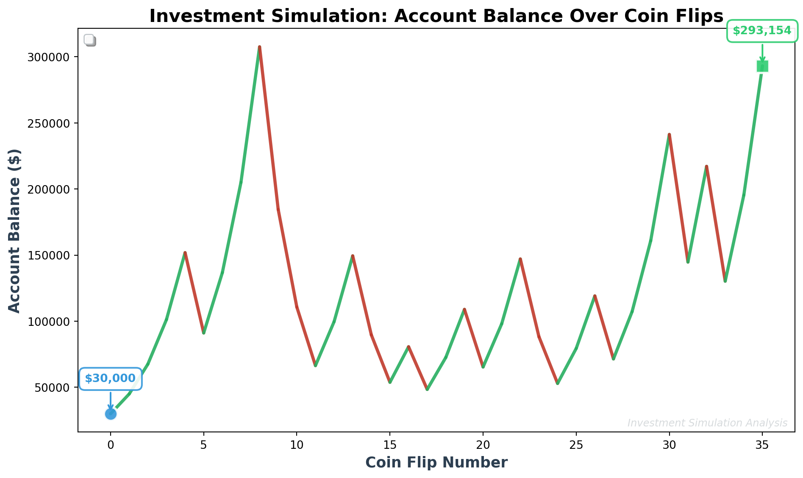
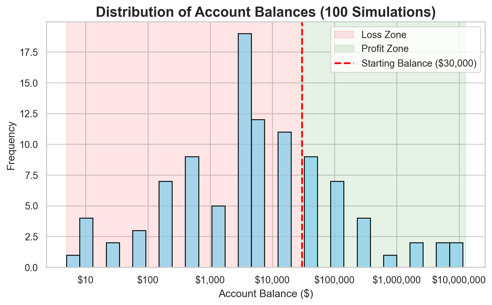
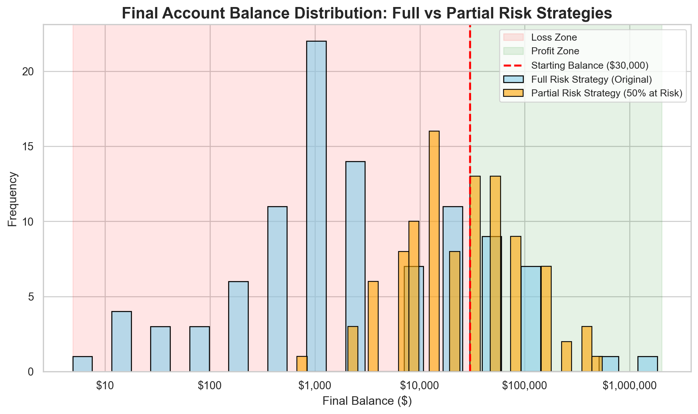

Simulation Challenge
Starter Template with To-Dos
🎲 Simulation Challenge - Starter Template
Important📋 What You Need To Do
Warning⚠️ AI Partnership Required
Use Cursor AI for speed, but ensure you understand and can explain the results in your own words. Verify cursor’s calculations as investment simulation is tricky.
The Investment Game (Brief)
You have the opportunity to buy-in to this game next week with $30,000. Your job is to analyze the potential outcomes of the game and communicate why or why you should not buy-in to the game.
After each coin flip:
- Heads: increase your account balance by 50%
- Tails: decrease your account balance by 40%
You flip the coin 35 times. Your mission is to analyze outcomes and communicate insights clearly.
Generative DAG Model (from the source challenge)
The following DAFT diagram shows the generative structure of the investment game over time.
Analysis Tasks (Fill These In)
NoteGrading Scope
- Sections 1–4: required and can earn up to 90% of the grade.
- Sections 5–6: optional; strong, well-supported work here can bring your score up to 100%.
1) Expected Value After 1 Flip
What is the gain in expected value as a percentage of your buy-in? Does this simple analysis suggest you should buy-in to the game?
Expected value after one flip: $31,500.00
Gain in expected value: $1,500.00 (5.00%)
The expected value of your account balance after one flip is $31,500.00.
This is less than $30,000, so you should not buy-in to the game based on expected value alone.2) Single Simulation Over Time (Narrative + Plot)
Following visualize and narrative explains what happens to account balance over the course of one run.
Starting balance: $30,000.00
Final balance after 35 coin flips: $293,153.58
Change: $263,153.58 (877.18%)/var/folders/_m/fd3rypln675c08nyp691yvb00000gn/T/ipykernel_17591/207306678.py:99: UserWarning: No artists with labels found to put in legend. Note that artists whose label start with an underscore are ignored when legend() is called with no argument.
legend = ax.legend(loc='upper left', framealpha=0.95, fontsize=10.5,
Starting with $30,000.00, the simulation ran through 35 coin flips. Out of 35 flips, 22 resulted in gains (heads: +50%) and 13 resulted in losses (tails: -40%).
Key Moments: - Maximum balance: $307,546.88 reached at coin flip 8 - Minimum balance: $30,000.00 reached at coin flip 0 - Final balance: $293,153.58 after 35 coin flips
✅ OUTCOME ASSESSMENT: I am HAPPY with this outcome. Its not profitable all time and its risky investment
The investment grew from $30,000.00 to $293,153.58, representing a 877.18% return. This is a 877.18% profit on the initial investment. Despite the volatility shown in the graph (with gains and losses throughout), the final result shows a positive return, which meets the basic goal of earning more than what was initially invested.
The simulation demonstrates the high volatility inherent in this investment game, with balance fluctuating dramatically between coin flips. The color-coded line shows alternating periods of gains (green) and losses (red), illustrating the risky nature of this strategy.
3) 100 Simulations: Distribution of Final Balances
Visually and narratively describe the distribution of your account balance after running the 100 simulations. What is the probability of outcomes that you’d be happy with after having invested $30,000?

The following are the distribution analysis of the 100 simulations:
DISTRIBUTION ANALYSIS
Simulation Parameters:
- Initial investment: $30,000
- Number of coin flips: 35
- Number of simulations: 100
Distribution Statistics:
- Mean final balance: $392,420.53
- Median final balance: $5,253.31
- Standard deviation: $1,722,044.59
- Minimum final balance: $4.92
- Maximum final balance: $11,451,311.90
Probability of favorable outcomes:
- P(final balance > $30,000): 27.0% (27/100 simulations)
- P(final balance ≥ $60,000): 18.0% (18/100 simulations)
- P(final balance ≥ $30,000): 27.0% (break-even or better)
After running 100 simulations of the investment game over 35 coin flips:
1. DISTRIBUTION CHARACTERISTICS:
- The distribution is highly skewed with a long right tail
- Mean balance ($392,420.53) is higher than median ($5,253.31)
- This indicates extreme outcomes: some simulations result in very high balances, while others result in significant losses
- The wide range ($4.92 to $11,451,311.90) shows high variability
2. PROBABILITY OF HAPPY OUTCOMES:
- After investing $30,000, the probability of ending with MORE than your initial investment is 27.0%
- This means in 27 out of 100 simulations, you would be profitable
- The probability of at least DOUBLING your money is 18.0%
3. RISK ASSESSMENT:
- Less than half of simulations result in profit - this is a HIGH RISK investment
- The high standard deviation ($1,722,044.59) indicates significant uncertainty
- You could lose as much as $29,995.08 or gain as much as $11,421,311.90
4. CONCLUSION: If you define ‘happy outcomes’ as finishing with more than your $30,000 investment, the probability is 27.0% However, the extreme variability means outcomes are highly unpredictable
4) Probability Balance > $30,000 After 35 Coin Flips (Original Game)
Report the probability estimate and interpret its practical meaning.
Number of successful simulations (Final Balance > $30,000): 27.00
Total number of simulations: 100
The probability of ending with more than $30,000 after 35 coin flips is 0.270
This means that in 27 out of 100 simulations, you would be profitable.5) Modified Strategy (Bet Exactly 50% Each Round)
Instead of having the full balance at risk with each coin flip, assume only 50% of balance is gambled each round. Compare this to the original game. Which is riskier? Which has better upside?

Original vs Modified Strategy (50% at Risk)
Original Strategy (Full Balance at Risk)
- Mean final balance: $41,422.34
- Median final balance: $2,101.32
- Standard deviation: $196,035.97
- Minimum: $4.92
- Maximum: $1,832,209.90
- P(final > $30,000): 18.00%
- Profitable simulations: 18/100
Modified Strategy (50% of Balance at Risk)
- Mean final balance: $57,339.82
- Median final balance: $24,000.00
- Standard deviation: $85,218.37
- Minimum: $675.54
- Maximum: $545,696.82
- P(final > $30,000): 48.00%
- Profitable simulations: 48/100
Comparison
- Mean difference: $15,917.48
- Std dev ratio (mod/orig): 0.43
- Max difference: $-1,286,513.08
- Min difference: $670.62
- Probability gain diff: 30.00%
Interpretation: Which is Riskier? Which has Better Upside?
The Original Strategy (Full Balance at Risk) has:
The Original strategy is RISKIER (std dev: $196,035.97 vs $85,218.37)
Higher volatility means more uncertainty
The Original strategy has BETTER UPSIDE (max: $1,832,209.90 vs $545,696.82)
Can achieve much higher maximum returns
The Modified Strategy (50% at risk) has:
Lower risk per round (only 50% of balance exposed to coin flip)
More conservative approach (50% always kept safe)
Lower maximum potential but also lower minimum loss
Reduced volatility compared to full-risk strategy
Interpretation of the distributions
What the figure shows
Full-risk outcomes sprawl from $5 to $1,832,210; the long right tail raises the mean ($41,422) well above the median ($2,101).
The 50%-at-risk strategy compresses the range ($676 to $545,697), nudging the mean ($57,340) and median ($24,000) much closer together.
Only 18.0% of full-risk simulations finish above $30,000, versus 48.0% when half the balance is protected each flip.
The histogram’s overlapping bars make the trade-off clear: the original game delivers rare but massive wins, while the modified plan clusters in a narrower, more predictable band.
Bottom line
The chart confirms that cutting risk in half sacrifices extreme upside but dramatically improves the odds of walking away with more than the initial $30,000.
6) Briefly Explain Your Findings From The Previous Step in Light of A Concept Known as the “Kelly Criterion”
Kelly Criterion Summary
Kelly Criterion Diagnostics - Kelly-optimal fraction to stake each flip: 25.0% - Expected log-growth at the Kelly fraction: 0.0062 per flip - Expected log-growth when staking 100% (original game): -0.0527 per flip - Expected log-growth when staking 50% (modified strategy): 0.0000 per flip
The Kelly Criterion is a bankroll-management rule that maximizes long-run wealth by choosing the bet fraction that maximizes expected log returns. In this coin-flip game, the optimal Kelly fraction is about 25.0%, so a Kelly bettor would stake roughly one-third of their bankroll each flip. Risking the entire balance (the original strategy) pushes the log-growth rate negative (-0.0527 per flip), which matches the histogram evidence of many wipeouts. Halving the stake to 50% raises the log-growth rate to 0.0000 per flip, moving closer to the Kelly-optimal path while still allowing meaningful upside. Practitioners often bet below the strict Kelly level to guard against streaks and model error; the modified strategy mirrors that prudence by always sheltering half of the account.